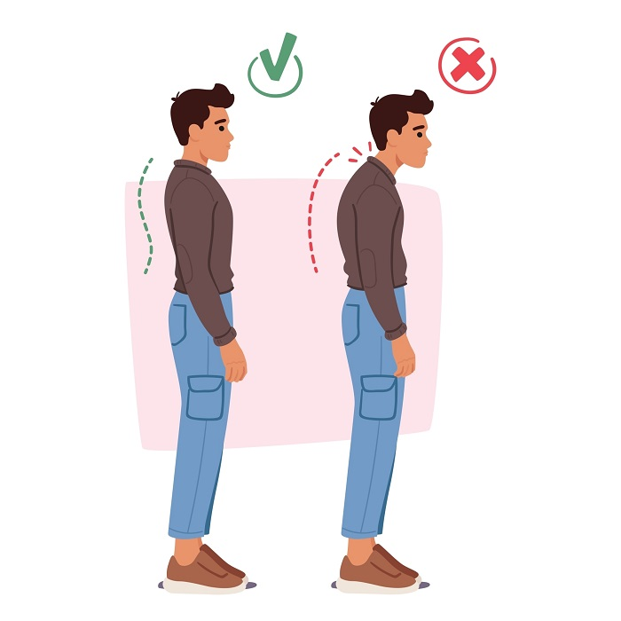
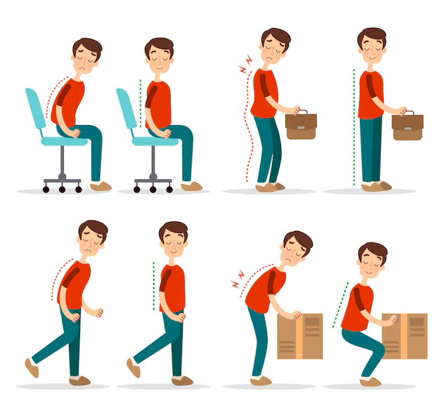
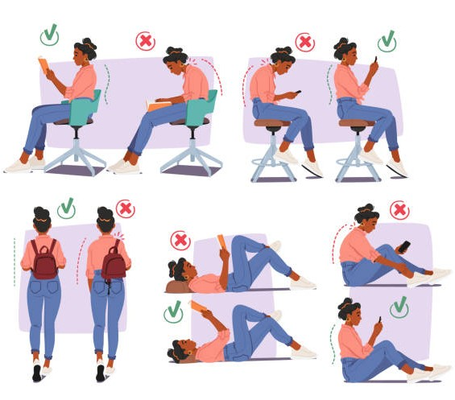
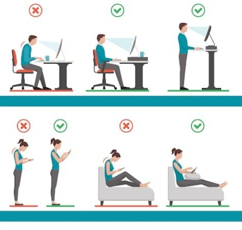

Manter uma boa postura é essencial para evitar dores musculares, fadiga e problemas na coluna. Uma postura correta melhora a respiração, o humor e até a concentração.
Práticas de prevenção, postura correta e bem-estar no dia a dia
-
Importância da Postura no Dia a Dia
Mantém a saúde da coluna, prevenindo dores, tensões e desgastes.
Melhora a respiração, circulação, otimizando o funcionamento do corpo.
Transmite confiança, melhora o humor e a disposição.
-
Causas da Má Postura
Hábitos incorretos: sentar errado, curvar-se ao usar eletrônicos, dormir mal.
Sedentarismo e fraqueza muscular reduzem o suporte da coluna.
Fatores anatômicos, sobrepeso e estresse também contribuem.
-
Malefícios da Má Postura
Pode causar desvios posturais Cifose, Escoliose e hérnias de disco.
Provoca dores crônicas, rigidez muscular e fadiga.
Afeta digestão, respiração e aparência corporal.
Postura Incorreta vs Correta



